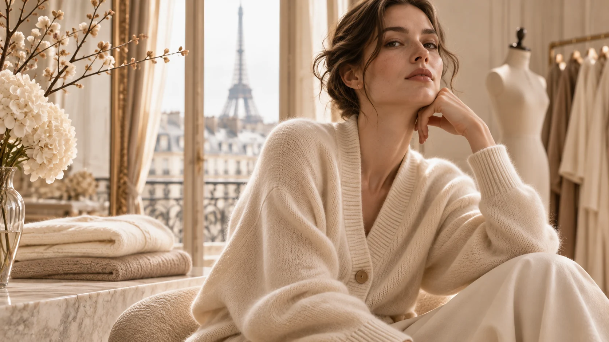
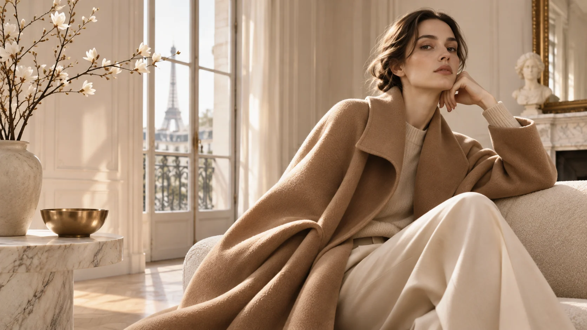

AI-GENERATED EDITORIAL · STYLING CONCEPTÉPURE FASHION / ÉDITION 01 · AUTOMNE — HIVER 2026
The Quiet
Season.
L’art de vivre en douceur.
아무것도 과장하지 않는 아름다움. 파리지앵의 겨울과 캐시미어의 온기를 기록한 ÉPURE의 첫 번째 디지털 패션 매거진.
모든 화보는 AI로 제작한 콘셉트 이미지이며 실제 판매 상품 착용사진이 아닙니다.
THE IMAGE ISSUESTORIES · PEOPLE · MATERIALSPARIS / SEOULVOL. 01 — 2026
THE EDITORIAL DESK
Stories in focus.
실루엣, 소재, 색의 미학을 한 편의 매거진처럼 읽어보세요.

THE ÉPURE POINT OF VIEW
“Elegance is
a state of being.”
눈에 띄기 위해 입는 옷이 아니라, 나다운 균형을 위해 선택하는 옷. ÉPURE의 Fashion 에디션은 조용하고 단단한 태도를 기록합니다.
EXPLORE THE STYLE STORY ↗É P U R E / FASHIONTHE
QUIET
SEASONÉDITION 01 · 2026
QUIET
SEASONÉDITION 01 · 2026
DIGITAL EDITION / COMPLIMENTARY DOWNLOAD
Your issue,
to keep.
9페이지의 파리 에디토리얼 화보와 스타일링 노트. 스마트폰과 태블릿에서도 편하게 열람할 수 있는 PDF로 소장하세요.
DOWNLOAD THE LOOKBOOK실제 제조사·상품 사진이나 실착을 보증하지 않는 브랜드 에디토리얼입니다.